Arbeitserziehungslager Reichenau
Ein Gedenkort für die Toten des AEL Reichenau (1941-1945)
Das Arbeitserziehungslager Reichenau
Von 1941 bis 1945 wurden im Arbeitserziehungslager Reichenau circa 8.500 Menschen festgehalten. Hier herrschten unmenschliche Lebensbedingungen, Willkür und Gewalt. Bisher sind 115 Personen – darunter zwei Frauen – aus 15 Ländern bekannt, die den Terror mit ihrem Leben bezahlten. Im Lauf der Jahre erfüllte das Lager unterschiedliche Funktionen. Zuerst war es ein Arbeitserziehungslager für in- und ausländische Arbeiter. Später wurden auch politisch verdächtige Personen hierher gebracht. Außerdem diente es als Transitlager für italienische Arbeiter sowie für Juden und Jüdinnen, die in Konzentrationslager deportiert wurden.
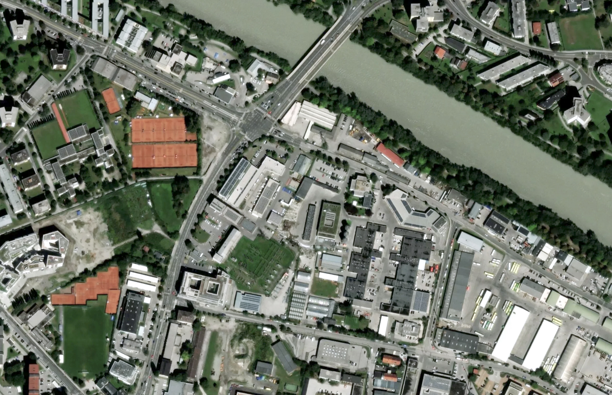
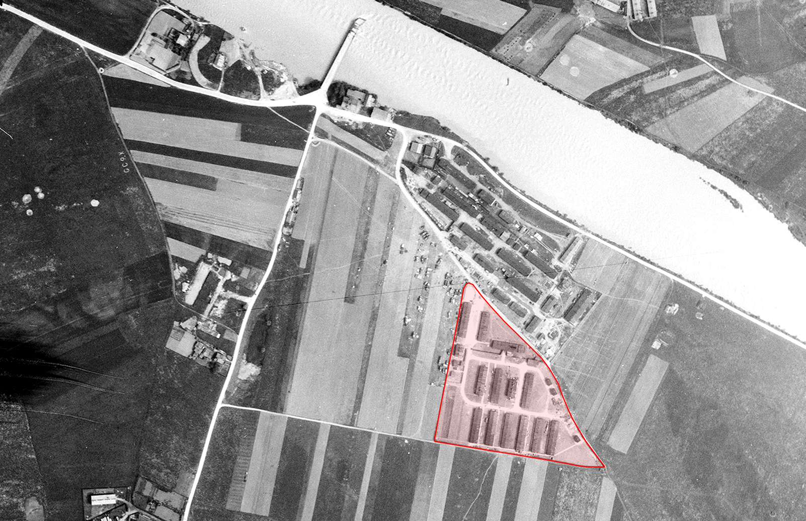
Ziehen Sie den Schieberegler, um die 1945 sichtbaren Lagerstrukturen mit der modernen Industrie- und Gewerbeentwicklung zu vergleichen, die heute das Gelände einnimmt.
Die Geschichte des Arbeitserziehungslager Reichenau
Die Zwangsarbeit in der Zeit des Nationalsozialismus ist beispiellos. Mehr als 20 Millionen Menschen wurden überall im Deutschen Reich und in den besetzten Gebieten eingesetzt – in Rüstungsbetrieben, auf Baustellen, in der Landwirtschaft, im Handwerk oder in Privathaushalten. Mit keinem anderen nationalsozialistischen Verbrechen wurden so viele Menschen persönlich konfrontiert – als Opfer, Täter oder Zuschauer. Auch im Gau Tirol-Vorarlberg wurden Zwangslager errichtet und Zwangsarbeiterinnen und Zwangsarbeiter eingesetzt.
Diese Karte von Österreich zeigt alle bekannten NS-Lager, basierend auf einer Datenbank von Horst Schreiber. Klicken Sie auf einen Marker, um mehr Details zum Lager zu sehen.
In Innsbruck entstanden mehrere Lager, wobei der größte Lagerkomplex auf einem Teil des Geländes des heutigen Gewerbegebietes Rossau entstand. Einen Teil des Komplexes bildete ein Auffanglager der Gestapo für geflohene italienische Arbeitskräfte, das so genannte Arbeitserziehungslager Reichenau. Nördlich des dieses Lagers wurde ein Zwangsarbeits- und Kriegsgefangenenlager errichtet, das von der Stadt Innsbruck, der Reichsbahn und der Reichspost betrieben wurde. Somit bestand der Lagerkomplex aus dem Arbeitserziehungslager Reichenau und dem Lager Nord.
Die Bauarbeiten für das Arbeitserziehungslager Reichenau begannen im Herbst 1941 und bereits Anfang 1942 wurden dort als „Arbeitsbummelanten“ bezeichnete Menschen interniert, die durch unmenschliche Disziplinierungsmaßnahmen im Sinne einer NS-Arbeitsmoral „erzogen“ werden sollten. Ab 1943 diente das Arbeitserziehungslager Reichenau zudem als Internierungslager für politisch verdächtige Personen, als Transitlager für italienische Arbeiter aus Norditalien, welche nach der Besetzung Italiens aus politischen Gründen deportiert worden waren, für italienische, britische, österreichische und andere Jüdinnen und Juden sowie für österreichische und slowenische Häftlinge aus einem aufgelösten Arbeitserziehungslager in Kärnten. Schätzungen zufolge waren zwischen 1941 und 1945 im Arbeitserziehungslager Reichenau 8.500 bis 8.600 Menschen, im Lager Nord bis zu 700 Personen interniert.
Herkunft der Opfer
Die folgende Karte zeigt die Geburtsorte der 115 Opfer, die im Lager Reichenau starben. Linien verbinden jeden Ort mit Innsbruck und veranschaulichen das internationale Ausmaß der Verfolgung.
Bis Mai 1943 bestand die Lagerwache aus rund 30 Männern der SS, die jedoch nach und nach zur Wehrmacht einrückten. Zur Unterstützung der Gestapo folgten dienstverpflichtete, meist ältere Gendarmeriebeamte oder Polizisten, ab dem Herbst 1944 baltische Hilfspolizisten.
Der Wandel des Arbeitserziehungslagers Reichenau – von der Disziplinierung und „Erziehung zur Arbeit“ bis hin zur Internierung und Durchgangsstation auf dem Weg in ein Konzentrationslager oder zum Arbeitseinsatz im Deutschen Reich – schlug sich in der Zahl der Toten nieder. Sie stieg ab 1943 signifikant und erreichte 1944 den Höhepunkt. Dank umfangreicher Recherchen in in- und ausländischen Archiven wissen wir nun, dass mindestens 115 Menschen im Arbeitserziehungslager Reichenau selbst bzw. in Folge dort erlittener Verletzungen und Qualen in der Klinik oder im Krankenhaus Hall starben. Die biografischen Eckdaten der Toten sind aufgrund der Forschungen nun bekannt.
Nach der Befreiung Tirols im Mai 1945 wurde der Lagerkomplex u.a. als Heeresentlassungsstelle, Internierungslager für ehemalige Nazis, Unterkunft für Vertriebene und Geflohene genutzt. Im Jahr 1948 wurden die Baracken von der Stadt Innsbruck zu Notwohnungen für Vertriebene und Wohnungslose, also Menschen in prekären sozialen Situationen, umgewandelt. Der Lagerkomplex wurde 20 Jahre lang, bis zum endgültigen Abbruch der letzten Baracken im Jahr 1968, weitergenutzt. Mit dem Abriss der letzten Baracken begann die Transformation des Areals in ein rasant wachsendes Gewerbegebiet. Auf dem Areal des ehemaligen Arbeitserziehungslagers Reichenau und Teilen des Lagers Nord errichtete die Stadt Innsbruck ab den späten 1960er Jahren ihren Bau- und Recyclinghof.
Die Geschichte des Gedenkens
Auf Anregung des Bundesdenkmalamtes wurde im Mai 2023 eine punktuelle archäologische Grabung durchgeführt, um die einzelnen Gebäude und Baracken auf dem Lagergelände in der Rossau und deren Nutzung zu identifizieren. Anhand dutzender bisher unbekannter Luftbilder aus dem Zweiten Weltkrieg konnte eine überaus präzise Zuordnung getroffen werden.
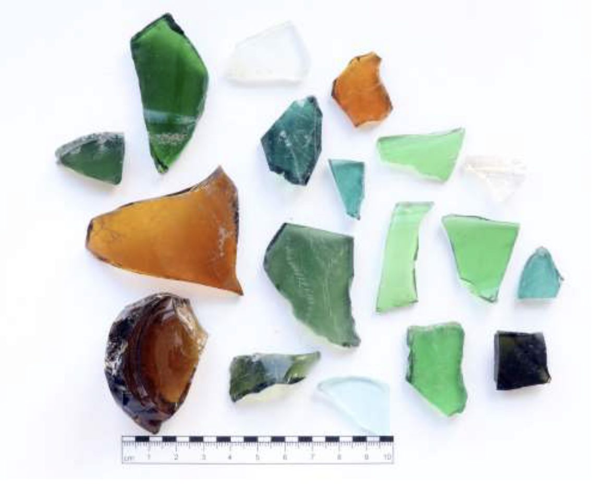
Im selben Jahr, in dem die letzte Baracke des Arbeitserziehungslagers Reichenau abgetragen wurde, regte der Bund der Opfer des politischen Freiheitskampfes in Tirol bei der Stadt Innsbruck die Errichtung einer Gedenkstätte in der Nähe des ehemaligen Lagergeländes an. 1971, drei Jahre später, wandte sich die Arbeitsgemeinschaft Vaterlandstreuer Verbände Tirols erneut an die Stadtgemeinde mit dem Ersuchen, ein Denkmal für die Opfer des Lagers „westlich der Einfahrt zum Zentralhof“ aufzustellen. Das Denkmal wurde schlussendlich östlich der Einfahrt zum Recyclinghof errichtet. Die Kosten betrugen damals 226.000 Schilling.
Am Nationalfeiertag, dem 26. Oktober 1972, enthüllte Bürgermeister Alois Lugger im Beisein zahlreicher ausländischer Delegationen und Spitzen der Behörden das vom Wiener Bildhauer Franz Anton Coufal entworfene Gedenkzeichen mit folgender Inschrift:
Hier stand in den Jahren 1939 bis 1945 das Gestapo- Auffanglager Reichenau, in dem Patrioten aus allen von NationaIsozialismus besetzten Ländern inhaftiert und gefoltert wurden. Viele von ihnen fanden hier den Tod.
Ergänzt wurde das Denkmal im Jahr 2008 durch einen kleinen Gedenkstein mit einer Inschrift, entworfen von Johannes und Matthias Breit, die an italienische Arbeiter der Industriebetriebe von Sesto San Giovanni erinnern. Sie waren wegen ihres Widerstandes ins Arbeitserziehungslager Reichenau deportiert worden. Seither fanden in unregelmäßigen Abständen privat organisierte Gedenkfeiern beim Denkmal statt, an denen bis vor einigen Jahren immer wieder auch Institutionen und Vereine aus verschiedenen Herkunftsländern von Insassen des Arbeitserziehungslagers Reichenau teilnahmen.
Das Denkmal ist als historische Errungenschaft und Setzung zu würdigen, entspricht jedoch in keiner Weise mehr den Anforderungen an eine zeitgemäße Erinnerungskultur. Die Inschrift ist inhaltlich nicht korrekt, die Ästhetik des Denkmals überholt und der Standort neben dem Eingang des städtischen Recyclinghofes denkbar ungeeignet. Vor allem aber ist der aktuelle Ort eines angemessenen Gedenkens an die Opfer und deren Leid nicht würdig.
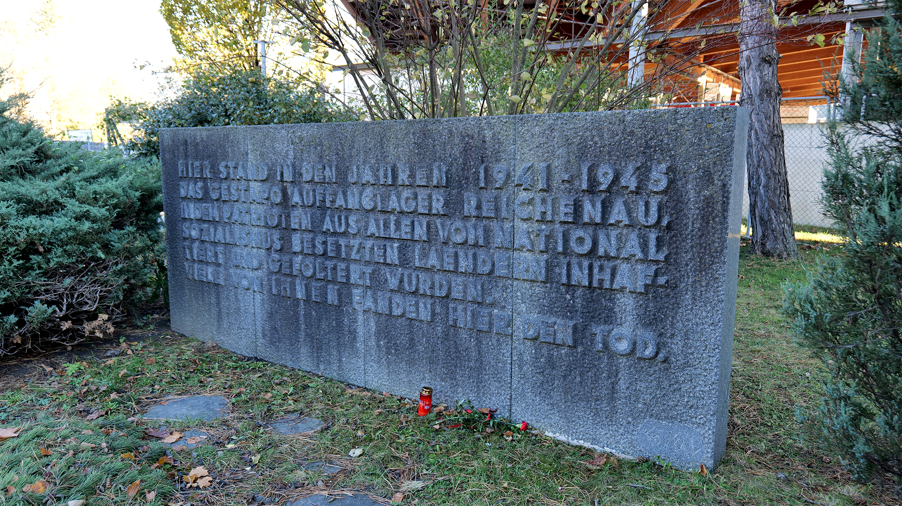
Der neue Gedenkort
Aus der Geschichte des Ortes und des Gedenkens heraus ist der Auftrag erwachsen, sich dem Lagergelände in der Rossau und den Schicksalen der Menschen, die mit ihm verbunden sind, erneut zu widmen. Am Beginn stand intensive zeitgeschichtliche wie archäologische Forschung, um einen aktuellen Forschungsstand zu gewährleisten. Auf der Basis des Berichtes und der Empfehlungen der Kommission zur Neugestaltung des Gedenkortes traf der Gemeinderat der Landeshauptstadt Innsbruck die Grundsatz-entscheidung zur Errichtung einer zeitgemäßen Gedenkstätte. Es folgte ein mehrstufi-ger, internationaler Wettbewerb, der sowohl die architektonische als auch die künstleri-sche und die didaktische Gestaltung umfasste. Das Siegerprojekt der Werkgemeinschaft Heike Bablick · Ricarda Denzer · Karl-Heinz Machat · Bettina Schlorhaufer · Hermann Zschiegner wird im Folgenden vorgestellt.

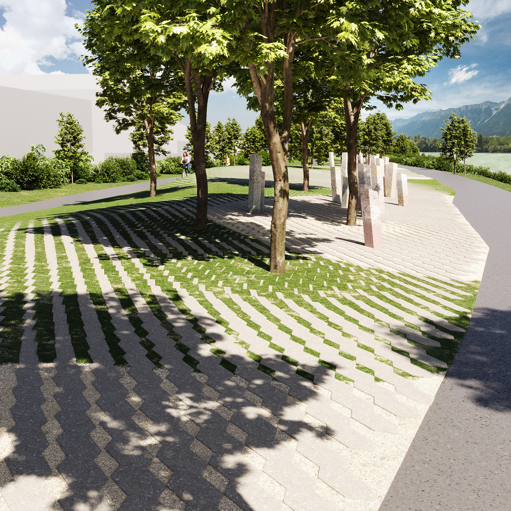
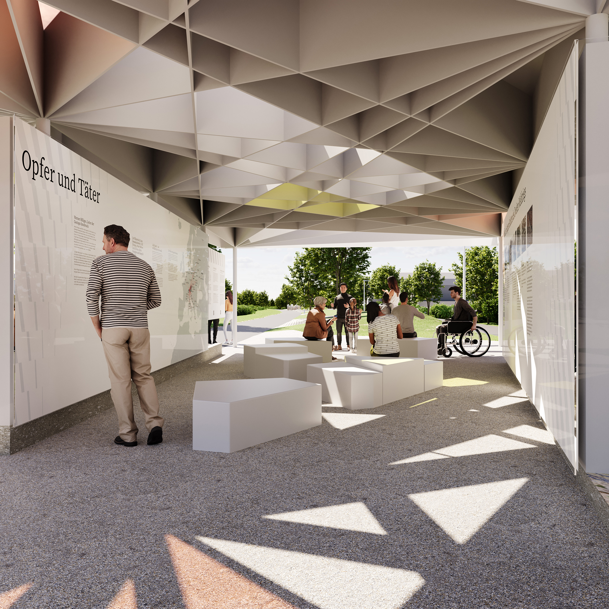
Namenssteine
Namenssteine für die 115 Opfer werden aus Beton mit bunten Sanden und Kiesen gegossen, im Höhenverlauf leicht unterschiedlich gefärbt. Die den Besucherinnen und Besuchern zugewandte Fläche wird spiegelnd poliert und mit dem Namen des ermordeten Menschen versehen. Da von den meisten Toten detaillierte biografische Daten und Porträtfotos fehlen, ersetzt die Spiegelung der Besucherinnen und Besucher auf der Namensfläche das Porträt. Die Verteilung der Namenssteine auf dem Gelände erfolgt entsprechend der Todestage der Ermordeten. Zeitstrahlen markieren die Monate, in denen das Lager bestand. Nachdem in manchen Monaten besonders viele Menschen starben, bilden die Namenssteine stellenweise dichte Gruppen. Auf diese Weise werden die Besucher und Besucherinnen zu unmittelbaren Zeugen der im Lager waltenden Grausamkeit. Bodenelemente bedecken in unterschiedlicher Dichte die Oberfläche einer wellenförmigen Erhebung. Sie veranschaulichen die große Zahl der Menschen, die im Lager interniert waren.
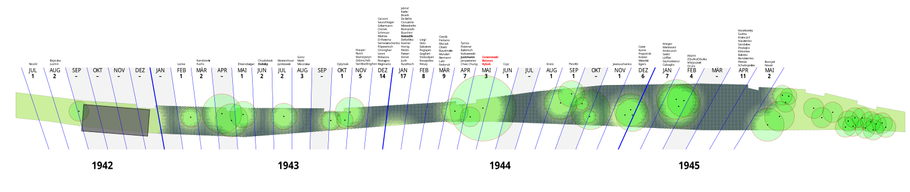
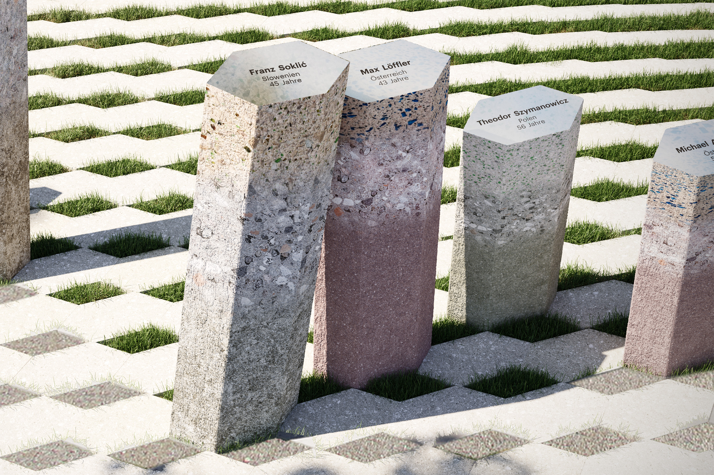
Namenssteine, Visualisierung. Werkgemeinschaft Gedenkort Reichenau, Visualisierung M.Perktold.
Erinnerungsufer
Die Wellenform des Gedenkorts Reichenau verweist auf das, was unter der Ober-fläche liegt, auf das, was nicht sichtbar ist; und auf die Zwischenräume der Fundstücke, auf die Lücken in den Archiven, auf die fehlenden Namen der Opfer eines Terror-regimes. Durch die gestaltete Landschaft entsteht eine Beziehung zwischen dem Ort des Gedenkens an die Opfer und dem historischen Tatort sowie zwischen den Zuhö-renden und dem Gehörten.
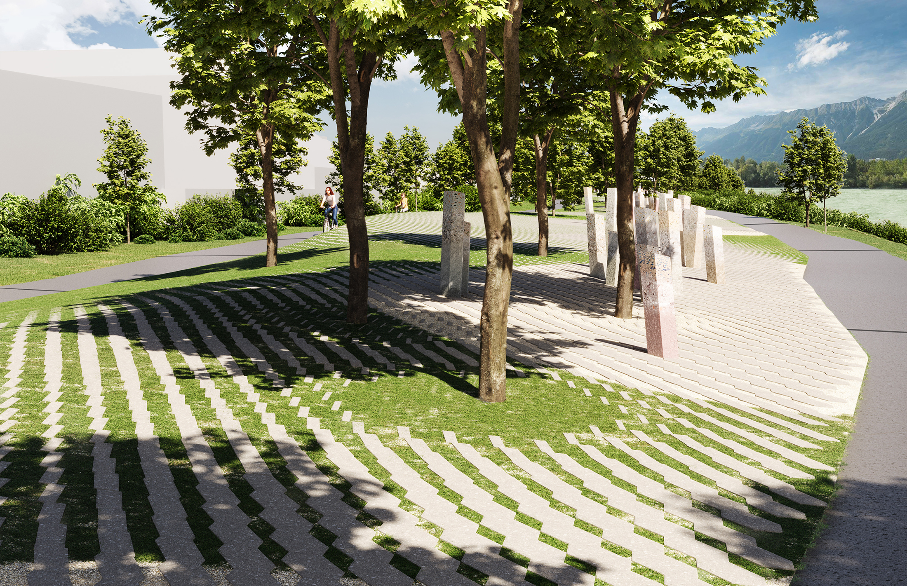
Wellenform des Gedenkorts Reichenau, Visualisierung. Werkgemeinschaft Gedenkort Reichenau, Visualisierung M.Perktold.
Animiertes Muster der Bodenelemente, Visualisierung. Werkgemeinschaft Gedenkort Reichenau
Der Pavillon
Ein Pavillon dient der Vermittlung eines kritischen Blicks auf ein dunkles Kapitel in der Geschichte der Stadt Innsbruck und bietet den Raum für Reflexionen über heutige Verhältnisse – bei uns und international. Der Pavillon besteht aus einer offenen Raum-struktur, die in ihren Grundmaßen auf eine Normbaracke aus der NS-Zeit verweist. Auf diese Weise soll dem Publikum vermittelt werden, in welch beengten Raumverhältnissen die Internierten des Arbeitserziehungslagers Reichenau lebten. Auf den Innen-seiten der Raumstruktur werden insbesondere mit Blick auf Schülerinnen und Schüler vertiefende Themen (Texte, Fotos, Pläne/Diagramme) behandelt.
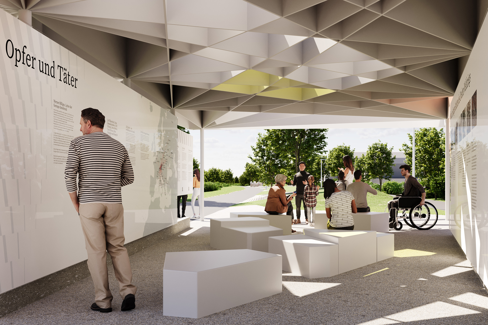
Pavillon, Visualisierung. Werkgemeinschaft Gedenkort Reichenau, Visualisierung M.Perktold.
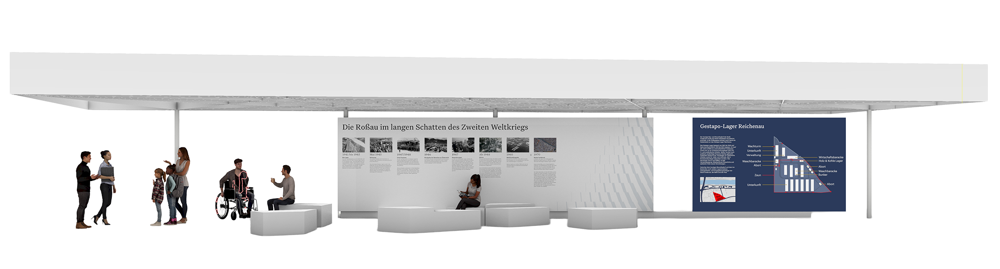
Die Informationstafeln für den Pavillon, Visualisierung. Werkgemeinschaft Gedenkort Reichenau
Zwei V-förmig angeordnete Paneel-Reihen erstrecken sich zwischen dem Radweg und der Uferpromenade, wobei die inhaltliche Konzeption des Pavillons auf unterschiedliche Verweildauern des Publikums eingeht. Die Dachskulptur des Pavillons besteht aus einer Konstruktion sternförmig gekreuzter Bänder aus Flachstahl. Teils offen, teils geschlossen ausgeführt, ermöglicht dieser obere Abschluss einen Besuch des Informationsbereichs bei jeder Witterung. Die Ausstellung wird durch eine Mischung aus Tages- und Kunstlicht beleuchtet. Im Raum sind Sitzgelegenheiten verteilt.
Der HörWeg
Im Fokus des HörWegs stehen die Stimmen erzählter Geschichte von involvierten Menschen rund um das Arbeitserziehungslager Reichenau, Erinnerungen und Biografien von Nachkommen sowie von Häftlingen des Arbeitserziehungslagers Reichenau. Weitere Schwerpunkte liegen auf der Perspektive der Angehörigen von Menschen, die im Lager Verbrechen begangen oder das Leben im Umfeld des Lagers und in der Nachnutzung mitbekommen haben. Gesprochene Sprache als Teil des kommunikativen Gedächtnisses ist, so Aleida Assmann, Alltagskommunikation – ungeformt, unorganisiert und zeitlich begrenzt –, wird mit der Zeit geformt und geht nach circa 80 bis 100 Jahren in das kulturelle Gedächtnis über. Die künstlerische Intervention verbindet die Idee der archäologischen Sondierung einer Bodenstruktur nach historischen Artefakten mit dem Klang der vorgefundenen (Klang-)Landschaft und dem Hören von Erzählungen. Das Sondieren und Freilegen von Schichtungen wird in der Auseinandersetzung mit dem ehemaligen Arbeitserziehungslager Reichenau, dem Ort, seiner umgebenden Infrastruktur und Natur bis hin zu mündlichen Erzählungen geführt und in Hörstücken für den HörWegs Gedenkort Reichenau umgesetzt. Eine Smartphone-App visualisiert auf einer Karte Wege entlang der Topografie des neuen Gedenkortes und im Umfeld des ehemaligen Arbeitserziehungslagers Reichenau. Jedem Kapitel des HörWegs ist eine markierte Zone auf der Karte gewidmet. Die App kann online ortsbezogen mit dem eigenen Standort verbunden werden und ist kostenlos. Für die Besucherinnen und Besucher ergibt sich ein vielstimmiges Hörerlebnis.
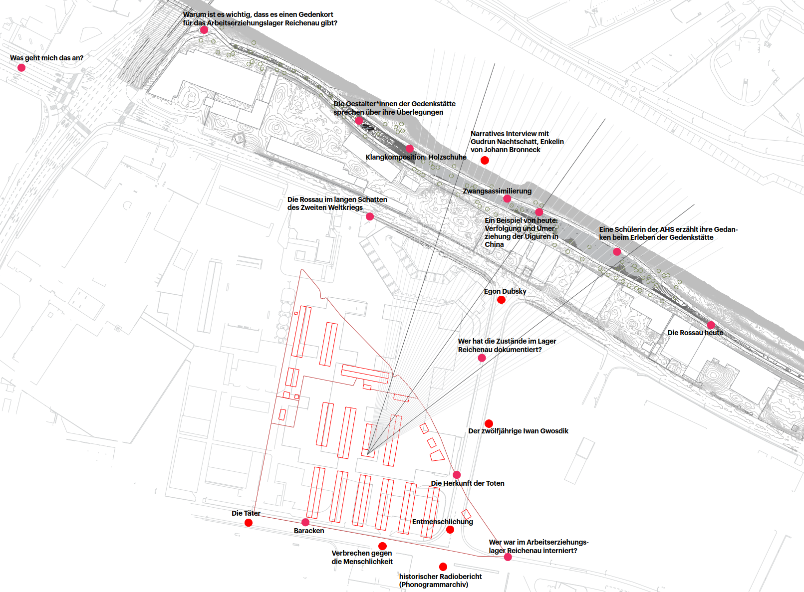
Internetseite mit digitalem Archiv
Integrativer Bestandteil der Gestaltung des Gedenkorts Reichenau ist eine Web-site als Archiv, Wissens- und Vermittlungsplattform. Zugleich bietet die Website die Möglichkeit, mehrsprachig zu kommunizieren. Hier werden vertiefende Inhalte, neue historische Erkenntnisse und fortlaufend Interviews mit Zeitzeuginnen und Zeitzeugen präsentiert. Zu allen behandelten Themen wurden spezifische Texte verfasst. Sie sollen einem breiten Spektrum an Besucherinnen und Besuchern Informationen in einfacher Sprache zugänglich machen. Als didaktische Basis bietet die Website auch die Möglichkeit, Unterrichtsmaterialien zur Verfügung zu stellen und Projektarbeiten einer breiteren Öffentlichkeit vorzustellen. Ein durchgehendes grafisches Konzept sorgt für gut wiedererkennbare Erscheinung der Inhalte und eine niederschwellige Kommunikation. Das dynamisch erzeugte Muster der Bodenelemente ist zugleich ein wichtiges grafisches Element. Es stellt die Verbindung zwischen Website und physischem Gedenkort her.
Gedenkakt am 8. Mai 2025
Im Gedenkakt am 8. Mai 2025 wurden die ersten Prototypen der Namenssteine enthüllt. Zwei davon sind stellvertretend allen Opfern des Lagerkomplexes Reichenau gewidmet. Der erste Prototyp, der einer Einzelperson gewidmet ist, ist für Jakub Justman, der im Alter von 49 Jahren ermordet wurde.
Die jüdische Familie Justman stammt ursprünglich aus Polen: Jakob Justman flüchtete gemeinsam mit seiner Tocher Leokadia Justman aus den Ghettos von Warschau und Piotrków, seine Frau Sofia Justman wurde im Vernichtungslager Treblinka ermordet. Jakub und Leokadia Justman fanden zuerst in Seefeld, dann in Innsbruck unter falscher Identität Unterkunft und Arbeit. Nach einem Verrat wurden beide von der Gestapo verhaftet. Jakub Justman wurde am 24. April 1944 im Lager Reichenau ermordet. Sein Grab ist heute im jüdischen Teil des Innsbrucker Westfriedhofs zu finden.

Der Bauprozess
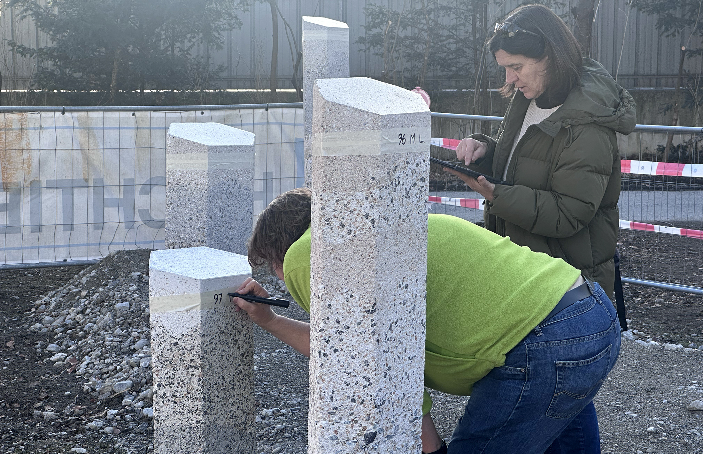
Fotos: Werkgemeinschaft Gedenkort Reichenau